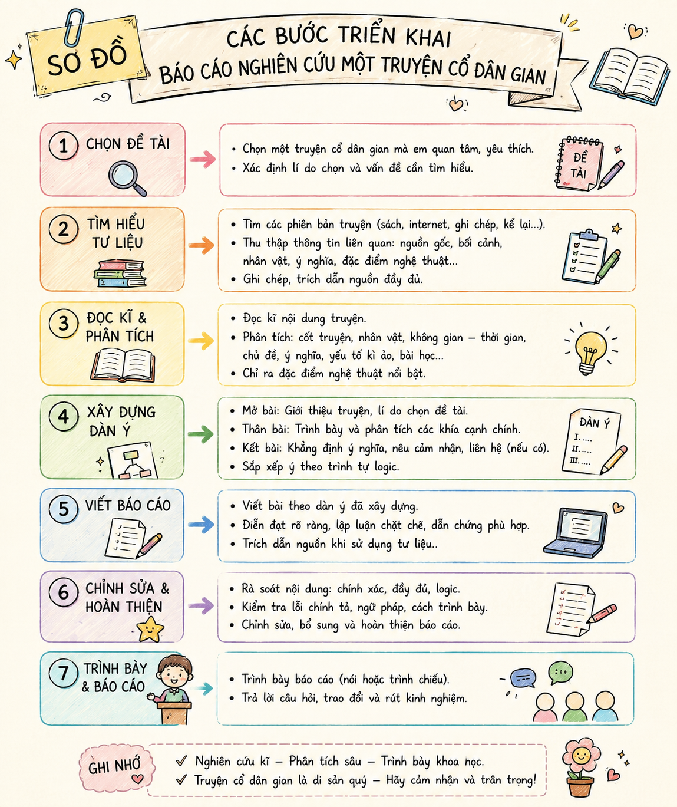
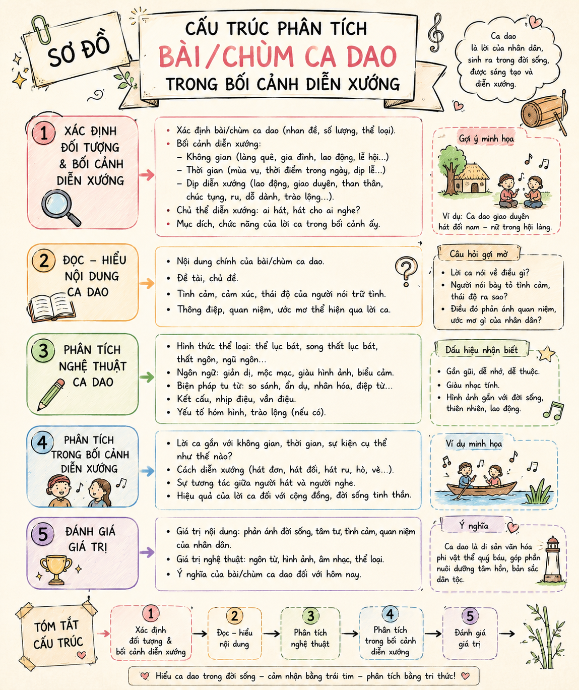

Để viết được báo cáo nghiên cứu về một vấn đề văn học dân gian, bạn cần huy động các tri thức, kĩ năng đã học, rèn luyện ở Phần 1 của Chuyên đề 1, phối hợp với việc lựa chọn đề tài, vấn đề đích đáng và vận dụng được các thao tác nghiên cứu phù hợp. Cần đặc biệt lưu ý những đặc trưng của văn học dân gian như: tính nguyên hợp, tính tập thể, tính truyền miệng, tính diễn xướng, tính dị bản. Cần biết tập hợp thông tin từ nhiều nguồn để phục vụ cho việc viết bài.

Hình 1: Sơ đồ các bước triển khai báo cáo nghiên cứu một truyện cổ dân gian (đường dẫn: h1.png)1. Đặt vấn đề
- Nêu lý do chọn tác phẩm (Thánh Gióng, Thạch Sanh...).
- Trình bày xuất xứ của tác phẩm.
2. Giải quyết vấn đề
- Tập hợp, so sánh các bản kể (dị bản).
- Trình bày các nhận định đã có.
- Phân tích tác phẩm đa chiều.
- Đánh giá sức sống trong đời sống hiện đại.
3. Kết luận & TLTK
- Khẳng định ý nghĩa câu chuyện.
- Đề xuất hướng nghiên cứu tiếp theo.
- Liệt kê Tài liệu tham khảo chuẩn quy cách khoa học.
Khi tìm hiểu truyện Thánh Gióng hoặc Thạch Sanh, bạn phát hiện có nhiều bản kể khác nhau (ví dụ: bản kể của Nguyễn Đổng Chi và bản kể của Lê Trí Viễn). Bạn xử lý dữ liệu dị bản này như thế nào?
Ý nghĩa của việc xem xét sự "tái sinh" của truyện cổ trong các hình thức nghệ thuật hiện đại (phim ảnh, sân khấu, hội họa) là gì?
Nghiên cứu ca dao đòi hỏi phải chú ý đặc biệt đến bối cảnh diễn xướng (hát ru, hát đối đáp, lao động...) và nhân vật trữ tình, không gian - thời gian nghệ thuật, cùng các đặc trưng thể loại in đậm dấu ấn trong tác phẩm.

Hình 2: Sơ đồ cấu trúc phân tích bài/chùm Ca dao trong bối cảnh diễn xướng (đường dẫn: h2.png)Bảng 1: Tiến trình triển khai báo cáo nghiên cứu Ca dao
| Phần báo cáo | Nội dung trọng tâm | Yêu cầu phân tích đặc thù |
|---|---|---|
| Đặt vấn đề | Nêu lí do chọn bài/chùm ca dao, xuất xứ tài liệu. | Xác định vị trí bài ca dao trong đời sống người bình dân xưa. |
| Giải quyết vấn đề | Giới thiệu dị bản, tổng hợp ý kiến giới nghiên cứu, trình bày quan điểm cá nhân. | Đặt bài ca dao vào hoàn cảnh diễn xướng, phân tích từ ngữ, hình ảnh, kết cấu. |
| Kết luận & TLTK | Khẳng định ý nghĩa bài ca dao, đề xuất hướng nghiên cứu. | Đánh giá sức sống hiện tại (lễ hội, sân khấu ca nhạc, hát ru...) và ghi rõ danh mục TLTK. |
Tính dị bản là một trong những đặc trưng cơ bản nhất của văn học dân gian. Cùng một câu chuyện hay bài ca dao, khi lan truyền qua các vùng miền hoặc thời gian khác nhau sẽ tạo ra các biến thể. Việc tập hợp và đối chiếu các dị bản giúp nhà nghiên cứu thấy được sự phong phú trong tư duy sáng tạo của nhân dân lao động.
Tự lựa chọn một bài ca dao thuộc chủ đề tình cảm gia đình hoặc tình yêu quê hương đất nước (như chùm bài "Thân em..." hoặc "Rủ nhau xem cảnh Kiếm Hồ"), lập danh mục đối chiếu các dị bản và xây dựng dàn ý chi tiết cho bài báo cáo nghiên cứu dài 3-5 trang.
Khi trích dẫn ý kiến nghiên cứu hoặc văn bản dân gian từ tài liệu khác, bắt buộc phải chú thích rõ nguồn (Tên tác giả, năm xuất bản, tên sách/tạp chí, trang, NXB). Danh mục Tài liệu tham khảo ở cuối bài phải sắp xếp theo thứ tự bảng chữ cái tên tác giả.
Chinh phục 10 câu hỏi để trở thành "Triệu phú Nghiên cứu Văn học Dân gian"
Câu 1 ($100): Đặc trưng nào sau đây KHÔNG PHẢI của văn học dân gian?
Câu 2 ($200): Mục đích chính của việc tập hợp và so sánh các dị bản khi nghiên cứu truyện cổ là gì?
Câu 3 ($300): Trong cấu trúc đề cương báo cáo nghiên cứu, phần "Đặt vấn đề" bao gồm nội dung chính nào?
Câu 4 ($500): Yếu tố nào đóng vai trò đặc biệt quan trọng cần xem xét khi nghiên cứu Ca dao?
Câu 5 ($1,000): Danh mục Tài liệu tham khảo ở cuối báo cáo nghiên cứu bắt buộc phải xếp theo quy tắc nào?
Câu 6 ($2,000): Ý nghĩa của việc xem xét sự "tái sinh" của truyện cổ trong nghệ thuật hiện đại là gì?
Câu 7 ($4,000): Trong bài báo cáo nghiên cứu, văn phong diễn đạt phải tuân thủ yêu cầu nào?
Câu 8 ($8,000): Việc sử dụng bảng biểu và sơ đồ minh họa trong báo cáo mang lại tác dụng gì?
Câu 9 ($16,000): Nhân vật Thạch Sanh trong truyện cổ tích "Thạch Sanh" thuộc kiểu nhân vật nào?
Câu 10 ($32,000 - QUYẾT ĐỊNH): Chi tiết "niêu cơm thần" trong truyện Thạch Sanh thể hiện điều gì?
Bài tập 1 Phân tích tầm quan trọng của việc thống kê và so sánh dị bản khi nghiên cứu một truyện cổ dân gian.
Bài tập 2 Hãy lập dàn ý chi tiết báo cáo nghiên cứu về chi tiết nghệ thuật "Tiếng đàn thần" trong truyện cổ tích "Thạch Sanh".